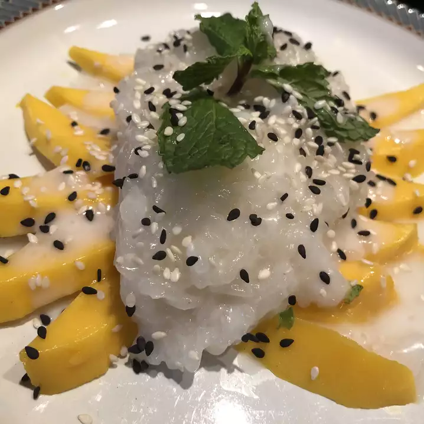

Mango Sticky Rice

Description
This wonderful and authentic-tasting Thai dessert is as good, if not better, than any sweet sticky rice with Mango available in Thai restaurants.
Ingredients
- 1 ½ cups uncooked short-grain white rice
- 2 cups water
- 1 ½ cup coconut milk
- 1 cup white sugar
- ½ teaspoon salt
- ½ teaspoon salt
- ½ coconut milk
- 1 tablespoon white sugar
- ¼ teaspoon salt
- 1 tablespoon tapioca starch
- 3 mangos, peeled and sliced
- 1 tablespoon toasted sesame seeds
Steps
-
Combine the rice and water in a saucepan; bring to a boil; cover and reduce heat to low. Simmer until water is absorbed, 15 to 20 minutes.
-
While the rice cooks, mix together 1 1/2 cups coconut milk, 1 cup sugar, and 1/2 teaspoon salt in a saucepan over medium heat; bring to a boil; remove from heat and set aside. Stir the cooked rice into the coconut milk mixture; cover. Allow to cool for 1 hour.
-
Make a sauce by mixing together 1/2 cup coconut milk, 1 tablespoon sugar, 1/4 teaspoon salt, and the tapioca starch in a saucepan; bring to a boil.
-
Place the sticky rice on a serving dish. Arrange the mangos on top of the rice. Pour the sauce over the mangos and rice. Sprinkle with sesame seeds.